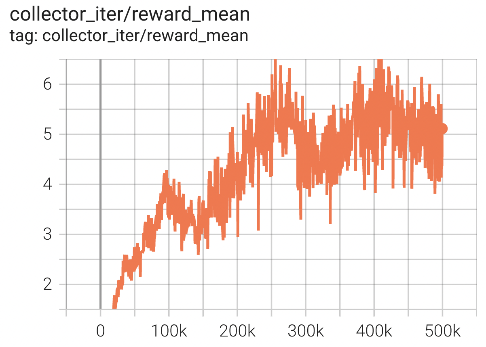

Evogym¶
Overview¶
Evolution Gym (Evogym) is the first large-scale benchmark for co-optimizing the design and control of soft robots. Each robot is composed of different types of voxels (e.g., soft, rigid, actuators), resulting in a modular and expressive robot design space. The environment spans a wide range of tasks, including locomotion and manipulation on various types of terrains. The image below shows a robot in action.

Install¶
Installation Method¶
The Evogym environment can be downloaded from GitHub and installed using pip. Given that the installation procedure may vary a little according to your OS, you are invited to check the instructions in the original repository in case you should encounter any problem.
git clone --recurse-submodules https://github.com/EvolutionGym/evogym.git
cd evogym
pip install -r requirements.txt
python setup.py install
Verify Installation¶
After installation, you can verify whether if it is successful by running the following command:
python gym_test.py
Space Before Transformation (Original Environment)¶
Observation Space¶
The observation space includes the state information of the robot, a
(2N + 3)vector including the relative position of each voxel corner with respect to the center of mass of the robot(2N), and the velocity and orientation of center of mass(3). The data type isfloat32.To handle complex tasks, specifically those with varying terrain types, an additional observation vector including terrain information is provided.
Furthermore, goal-related information is offered to inform the controller of the execution status of the current task.
For instance, in manipulation tasks where the robot interacts with some object O, it is provided orientation and velocity as well as the position of O’s center of mass relative to the robot.
Action Space¶
The action space is continuous of size N. Each component of the N-size action vector is associated with an actuator voxel (either horizontal or vertical) of the robot, and instructs a deformation target of that voxel, compressing or stretching the size of voxel from 60% to 160%. The data type is
float.Specifically, the action value
uis within the range[0.6, 1.6], and corresponds to a gradual expansion/contraction of that actuator toutimes its rest length.
Reward Space¶
Each task is equipped with a reward function measuring the performance of the current robot and the control action. Generally, it is a
floatvalue.
Key Facts¶
1D observation input which can vary according to robot’s structure, task and environment.
Continuous action space according to the structure of the robot.
Top-performing policies not only can learn how to control a robot, but they can also learn how to create a better robot design tailored for a specific task.
Other¶
Robot and environment definition¶
Evogym provides fixed tasks, but you can define your own robot structure and environment. For a concrete example you can refer to the following json file and to the official documentation.
Lazy Initialization¶
In order to support parallel operations such as environment vectorization, environment instances generally implement lazy initialization, that is, the __init__ method does not initialize the real original environment instance, but only sets relevant parameters and configuration values. In the first callreset method initializes the concrete original environment instance.
Random Seed¶
There are two parts of the random seed in the environment that need to be set, one is the random seed of the original environment, and the other is the random seed of the random library used by various environment transformations (such as
random，np.random)For the environment caller, just set these two seeds through the
seedmethod of the environment, no need to care about the specific implementation detailsConcrete implementation inside the environment: For the seed of the original environment, set before calling the
resetmethod of the environment, the concrete original environmentresetConcrete implementation inside the environment: For random library seeds, the value is set directly in the
seedmethod of the environment
The Difference between Training and Testing Environments¶
The training environment uses a dynamic random seed, that is, the random seed of each episode is different, and is generated by a random number generator, but the seed of this random number generator is fixed by the
seedmethod of the environment ;The test environment uses a static random seed, that is, the random seed of each episode is the same, specified by theseedmethod.
Store Video¶
After the environment is created, but before reset, call the enable_save_replay method, specifying the path to save the game replay. The environment will automatically save the local video files after each episode ends. (The default call gym.wrappers.RecordVideo implementation ), the code shown below will run an environment episode and save the result of this episode in a folder./video/:
import time
import gym
from evogym import sample_robot
# import envs from the envs folder and register them
import evogym.envs
if __name__ == '__main__':
# create a random robot
body, connections = sample_robot((5, 5))
env = gym.make('Walker-v0', body=body)
if gym.version.VERSION > '0.22.0':
env.metadata.update({'render_modes': ["rgb_array"]})
else:
env.metadata.update({'render.modes': ["rgb_array"]})
env = gym.wrappers.RecordVideo(
env,
video_folder="./video",
episode_trigger=lambda episode_id: True,
name_prefix='rl-video-{}'.format(time.time())
)
env.reset()
# step the environment for 100 iterations
for i in range(100):
action = env.action_space.sample()
ob, reward, done, info = env.step(action)
x = env.render()
if done:
env.reset()
env.close()
DI-zoo Runnable Code Example¶
The full training configuration files are at github
link
Inside, for specific configuration files, such as walker_ppo_config.py , use the following demo to run:
from easydict import EasyDict
walker_ppo_config = dict(
exp_name='evogym_walker_ppo_seed0',
env=dict(
env_id='Walker-v0',
robot='speed_bot',
robot_dir='./dizoo/evogym/envs',
collector_env_num=1,
evaluator_env_num=1,
n_evaluator_episode=1,
stop_value=10,
manager=dict(shared_memory=True, ),
# The path to save the game replay
# replay_path='./evogym_walker_ppo_seed0/video',
),
policy=dict(
cuda=True,
recompute_adv=True,
# load_path="./evogym_walker_ppo_seed0/ckpt/ckpt_best.pth.tar",
model=dict(
obs_shape=58,
action_shape=10,
action_space='continuous',
),
action_space='continuous',
learn=dict(
epoch_per_collect=10,
batch_size=256,
learning_rate=3e-4,
value_weight=0.5,
entropy_weight=0.0,
clip_ratio=0.2,
adv_norm=True,
value_norm=True,
),
collect=dict(
n_sample=2048,
gae_lambda=0.97,
),
eval=dict(evaluator=dict(eval_freq=5000, )),
)
)
walker_ppo_config = EasyDict(walker_ppo_config)
main_config = walker_ppo_config
walker_ppo_create_config = dict(
env=dict(
type='evogym',
import_names=['dizoo.evogym.envs.evogym_env'],
),
env_manager=dict(type='subprocess'),
policy=dict(
type='ppo',
import_names=['ding.policy.ppo'],
),
replay_buffer=dict(type='naive', ),
)
walker_ppo_create_config = EasyDict(walker_ppo_create_config)
create_config = walker_ppo_create_config
if __name__ == "__main__":
# or you can enter `ding -m serial -c evogym_walker_ppo_config.py -s 0 --env-step 1e7`
from ding.entry import serial_pipeline_onpolicy
serial_pipeline_onpolicy((main_config, create_config), seed=0)
Benchmark Algorithm Performance¶
Carrier（Reward of 1 is given to the agent for completing its task plus a small reward for getting close to it).
The robot catches a box initialized on top of it and carries it as far as possible.
Carrier + PPO
